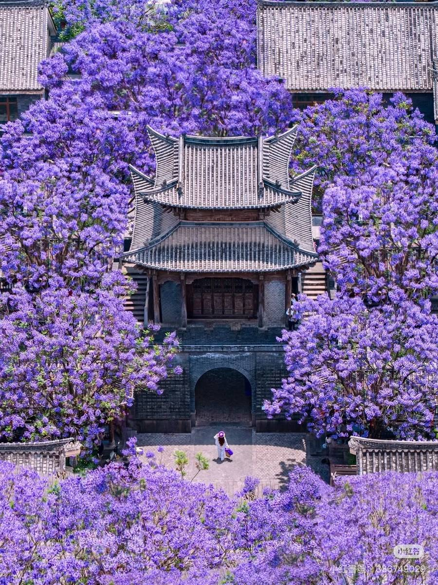
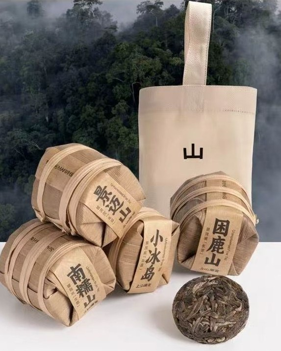

Yunnan · 彩云之南
云南
山有多高，茶就有多高。雾有多厚，故事就有多厚。

照片取自网络，若有侵权请告知我们，我们会立即下架。
Five themes · 五个主题
从山到杯，从手到家
茶
Tea
菌
Mushroom
香
Spice
染
Textile
器
Silver
云南是中国西南最厚的一块地。海拔从 76 公尺爬到 6740 公尺，气候从热带到寒带，民族二十六个。茶马古道从这里出发，普洱茶在这里被发酵。我们从中精选每一件能承载这份厚度的物。
当季选物

茶 · TEA
四大山头 mini 七子饼礼袋
景迈山 · 南糯山 · 小冰岛 · 困鹿山
NT$ 1,250 / 49g × 4
写信询问 →YUNNAN
茶 · TEA
易武正山 古树春茶饼
云南西双版纳 · 2024 春
NT$ 2,800 / 357g
写信询问 →YUNNAN
茶 · TEA
下关 老段家 30 年陈普洱
云南大理 · 1994 年发酵
NT$ 8,400 / 250g
写信询问 →YUNNAN
菌 · MUSHROOM
鸡枞菌油
楚雄 · 雨季鲜采
NT$ 680 / 200ml
写信询问 →YUNNAN
香 · SPICE
德宏曼掌村咖啡豆
德宏傣族景颇族自治州
NT$ 980 / 250g
写信询问 →YUNNAN
染 · TEXTILE
大理周城 板蓝根扎染方巾
大理白族自治州 · 手工
NT$ 1,580
写信询问 →YUNNAN
器 · SILVER
鹤庆 纯手打银茶杯
大理鹤庆县 · 寸氏家族
NT$ 4,200
写信询问 →The maker · 做事的人
物的背后是人
MAKER
Yunnan · 大理
段普明 先生
下关老段家 第三代茶人
爷爷从十六岁开始做茶，父亲接手了三十年，到我这代已经七十三年。茶仓里那股气息，是时间的味道，不是我能教出来的，是时间自己长出来的。
下关老段家茶仓位于苍山西麓，海拔 2200 公尺，常年湿度恒定。三十年来只做两件事：选料、等待。
云南
选物
From the high mountains